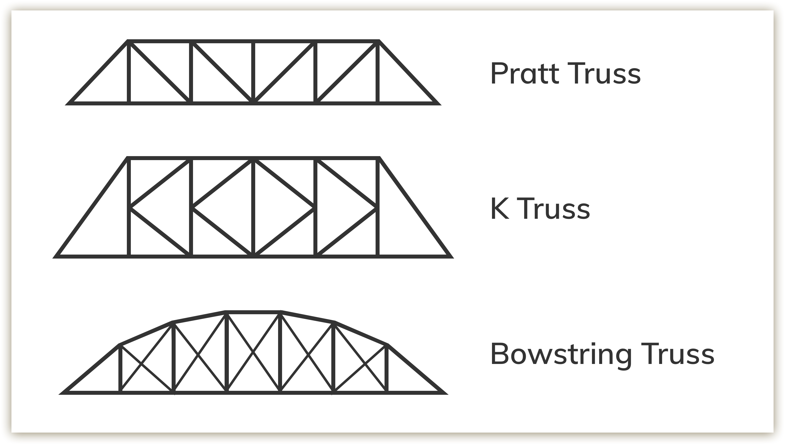
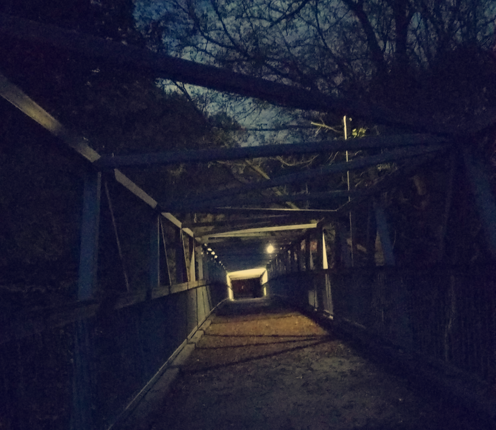
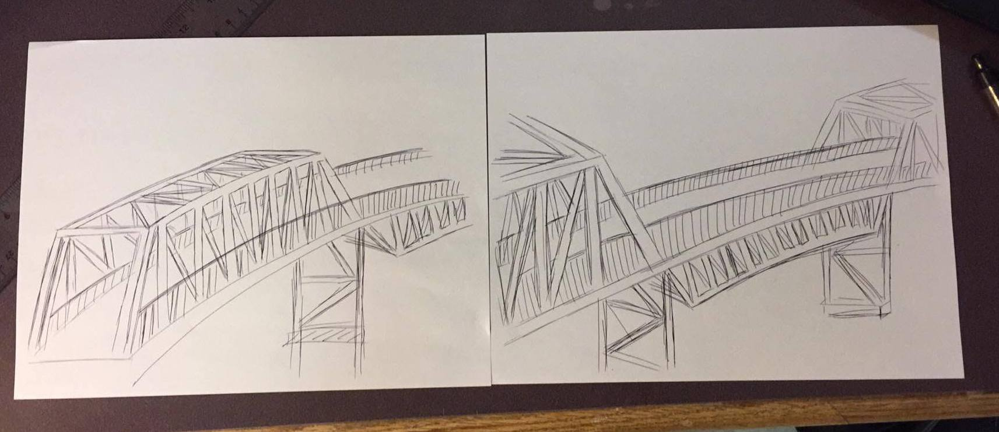

For my civil engineering course, my team and I searched Toronto for an old, decaying bridge and designed a replacement. As in our Proposition to Rebuild report: "The neighbourhood surrounding the Moore Park Ravine is comprised of many Victorian style homes, with a quiet atmosphere. Spanning the ravine is the Heath St. East pedestrian bridge, known fondly by locals as the Cat's Eye bridge. As this bridge is used frequently by the residents of the area, our team believes this would be a good opportunity for revitalizing local infrastructure."
Using the concepts we learned in lectures, calculations of beams, choices for HSS members, graphical prototypes, and cost and material analysis were conducted. Our designs accounted for the self load, load of people using the bridge, wind, and factors of safety.
Accompanying Files
Engineering Design Decisions
- The center of the bridge featured an inverted truss design to minimize view obstruction and feature the beautiful surroundings of the bridge. To provide dimensional contrast, the ends of the bridge are non-inverted.
- After observing the lived experiences of pedestrians and cyclists using the bridge during our field investigation, we increased the width of the proposed plan to more than 150% of the current bridge to accommodate both cyclists and pedestrians.
-
A Pratt design was chosen for its symmetrical and aesthetically pleasing trusses. This was chosen over a K or bowstring truss in order to minimize the obstructions caused by the structure.

-
To improve the lighting of the bridge's two dim lamps, the proposed design included 60 lights to be installed in the deck along both sides of the span, which are able to change colours for special occasions.

- A childproof steel railing was been chosen as it is aesthetically pleasing, safe for pedestrians, and cost-effective. This was implemented improve functionality of the bridge, as well as decrease the accessory cost.
